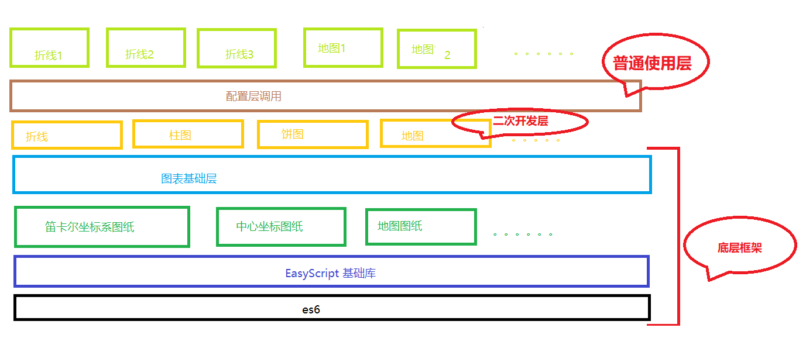

本库提供了许多基础设施，
Base类类提供了许多基于es6的实用方法，本库的底层基于Base类。
SVG类提供了许多绘图的实用方法，chartbase类封装了更高层的绘制方法，用于方便的绘制图表中的图形
chart部分的开发工程图：

开发和使用的方式:
非全职普通开发者使用:
function initChart() {
data.value.forEach(v => sum += v);
data.key.forEach((v, i) => {
dataGroup.push({
name: v,
value: data.value[i],
angle: data.value[i] * 360 / sum,
color: option.theme.color[colorIndex]
});
colorIndex === option.theme.color.length ? colorIndex = 0 : colorIndex++;
});
//【逻辑原点】
O = {
//x位
x: (shot.offsetSize.width + shot.position.left - shot.position.right) / 2,
//y位
y: (shot.offsetSize.height + shot.position.top - shot.position.bottom) / 2
};
}